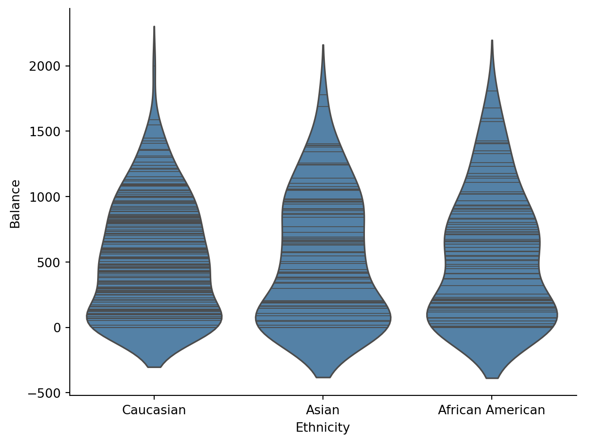
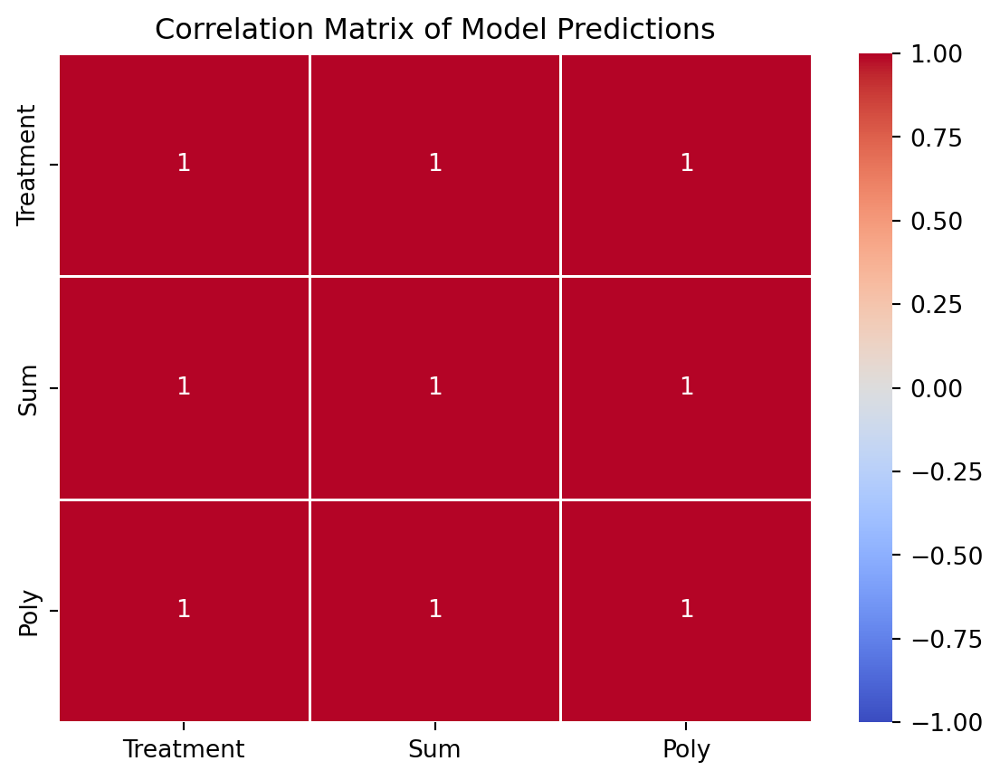

Code
import polars as pl
from polars import col
import seaborn as sns
from bossanova import modelSite Updates: Week 10 Slides
Eshin Jolly
In the previous notebook we added a 2-level categorical predictor (Student: Yes / No) using treatment coding. That was straightforward — one dummy variable, one reference group, done.
But what happens when a predictor has 3 or more levels? And does it matter how we code those levels into numbers?
Spoiler: the individual parameter estimates do change with different coding schemes, but there’s a test that gives the same answer no matter what. Understanding when and why is the key lesson of this notebook.
By the end you’ll know how to:
.jointtest() to ask “does this predictor matter at all?” — and understand why the answer is invariant to coding| Index | Income | Limit | Rating | Cards | Age | Education | Gender | Student | Married | Ethnicity | Balance |
|---|---|---|---|---|---|---|---|---|---|---|---|
| i64 | f64 | i64 | i64 | i64 | i64 | i64 | str | str | str | str | i64 |
| 1 | 14.891 | 3606 | 283 | 2 | 34 | 11 | "Male" | "No" | "Yes" | "Caucasian" | 333 |
| 2 | 106.025 | 6645 | 483 | 3 | 82 | 15 | "Female" | "Yes" | "Yes" | "Asian" | 903 |
| 3 | 104.593 | 7075 | 514 | 4 | 71 | 11 | "Male" | "No" | "No" | "Asian" | 580 |
| 4 | 148.924 | 9504 | 681 | 3 | 36 | 11 | "Female" | "No" | "No" | "Asian" | 964 |
| 5 | 55.882 | 4897 | 357 | 2 | 68 | 16 | "Male" | "No" | "Yes" | "Caucasian" | 331 |
Quick reminder of the variables we’ll focus on today:
| Variable | Description | Type |
|---|---|---|
| Balance | Average credit card debt ($) | Continuous |
| Ethnicity | African American / Asian / Caucasian | Categorical (3 levels) |
| Gender | Male / Female | Categorical (2 levels) |
| Student | Yes / No | Categorical (2 levels) |
| Married | Yes / No | Categorical (2 levels) |
In the previous notebook we modeled Student (2 levels) — that required 1 dummy column (\(k - 1 = 2 - 1 = 1\)).
Now let’s look at Ethnicity, which has 3 levels: African American, Asian, Caucasian. That means we need \(k - 1 = 2\) dummy columns.
By default the reference level is the first alphabetical level of the factor. In this case African American:
\[ Balance_i = \beta_0 + \beta_1 \cdot Ethnicity[Asian]_i + \beta_2 \cdot Ethnicity[Caucasian]_i \]
Let’s visualize first:

Now let’s take a look at the design matrix:
| Intercept | Ethnicity[Asian] | Ethnicity[Caucasian] |
|---|---|---|
| f64 | f64 | f64 |
| 1.0 | 0.0 | 1.0 |
| 1.0 | 1.0 | 0.0 |
| 1.0 | 1.0 | 0.0 |
| 1.0 | 1.0 | 0.0 |
| 1.0 | 0.0 | 1.0 |
Let’s try to understand what the default encoding is doing here by just grabbing the unique rows that correspond to each unique factor level of Ethnicity:
| Intercept | Ethnicity[Asian] | Ethnicity[Caucasian] |
|---|---|---|
| f64 | f64 | f64 |
| 1.0 | 1.0 | 0.0 |
| 1.0 | 0.0 | 0.0 |
| 1.0 | 0.0 | 1.0 |
Here’s how we can read this:
[1 0 0]: African American[1 1 0]: Asian[1 0 1]: CaucasianIntercept: mean of African AmericanEthnicity[Asian]: difference between Asian - African AmericanEthnicity[Caucasian]: difference between Caucasian - African AmericanAnd in GLM terms:
Ethnicity[Asian]) = Asian mean \(-\) African American meanEthnicity[Caucasian]) = Caucasian mean \(-\) African American meanWith 3 levels we get \(k - 1 = 2\) dummy columns. The reference group doesn’t need its own column — it’s captured by the Intercept.
| Ethnicity | mean_balance |
|---|---|
| str | f64 |
| "African American" | 531.0 |
| "Asian" | 512.313725 |
| "Caucasian" | 518.497487 |
Above we met the default way the GLM handles categorical predictors (switches) and we learned that this called treatment coding in class. But this is just one way to convert categories into numbers.
Different coding schemes change what the Intercept and slopes mean, but — as we’ll see — they don’t change the model’s overall fit or predictions.
Let’s compare three schemes side-by-side.
We’ve already seen this one:
| Property | Value |
|---|---|
| Intercept | Mean of the reference group |
| Each slope | Difference from reference group |
| Design matrix | 0/1 pattern (reference = all zeros) |
| Best when | There’s a natural reference group (e.g., control condition) |
| term | estimate |
|---|---|
| str | f64 |
| "Intercept" | 531.0 |
| "Ethnicity[Asian]" | -18.69 |
| "Ethnicity[Caucasian]" | -12.5 |
But we can control which group is the reference group directly in the model formula using treatment() and fitting again:
| term | estimate |
|---|---|
| str | f64 |
| "Intercept" | 518.5 |
| "Ethnicity[African American]" | 12.5 |
| "Ethnicity[Asian]" | -6.184 |
Notice how the Intercept now reflect the mean of the Caucasian group. Like other software bossanova will automatically calculate the remaining codes for the other factor levels, but loses their names (because you can specify very complicated codes!).
| Ethnicity | mean_balance |
|---|---|
| str | f64 |
| "Caucasian" | 518.497487 |
| "Asian" | 512.313725 |
| "African American" | 531.0 |
Your Turn
Can you figure out what the other parameters represent? Make a figure in seaborn to help you visualize the data and check
hint: we’ve simply moved things around so the “frame-of-reference” is the Caucasian group
In class we discussed how we can mean center continuous (slider) variables in our model to help with interpretability (and multi-collinearity). You can think of sum (deviation) coding as approximately equivalent for categorical (switch) variables.
Sum coding changes what the Intercept and slopes represent:
| Property | Value |
|---|---|
| Intercept | Grand mean (unweighted mean of group means) |
| Each slope | Deviation of that group from the grand mean |
| Design matrix | -1 / 0 / 1 pattern (last group = all -1s) |
| Best when | No natural reference; you want each group compared to the overall average |
The key property: each column in the design matrix sums to zero across levels — hence “sum” coding.
| Intercept | Ethnicity[African American] | Ethnicity[Asian] |
|---|---|---|
| f64 | f64 | f64 |
| 1.0 | 0.0 | 1.0 |
| 1.0 | 1.0 | 0.0 |
| 1.0 | -1.0 | -1.0 |
Notice the -1 / 0 / 1 pattern in the design matrix. The last level alphabetically (Caucasian) gets coded as -1 on both columns — it’s the “omitted” group whose deviation can be recovered as the negative sum of the other deviations.
You can interpret this encoding scheme as having the same effect that mean centering has on continuous (slider) predictors. It removes collinearity, but in the case of factor levels makes things harder to interpet, with the benefit being that it also “balances out” any differences in group size that you may have when you make comparisons.
Why columns sum to zero
In sum coding, the contrast columns are designed so that the Intercept estimates the grand mean — the unweighted average across all group means. Each slope then measures how far a group deviates from that average.
This is the coding scheme most naturally connected to ANOVA-style thinking, where we ask “how do groups differ from the overall average?” while accounting for imbalances in group-sizes.
| mean_balance |
|---|
| f64 |
| 520.603738 |
| term | estimate |
|---|---|
| str | f64 |
| "Intercept" | 520.6 |
| "Ethnicity[African American]" | 10.4 |
| "Ethnicity[Asian]" | -8.29 |
Your Turn
Like before, see if you can figure out what the other two parameters represent in terms of group-means. It’s tricky! And you’ll need to “mix” groups together
Polynomial coding is extremely useful whenever your factor levels (or hypotheses about them) are ordered. For example: “is there a linear trend across groups?”
| Property | Value |
|---|---|
| Intercept | Grand mean |
| Slopes | Linear trend, quadratic trend, etc. |
| Design matrix | Orthogonal polynomial contrasts |
| Best when | Levels have a natural ordering (e.g., Low / Medium / High) |
Let’s see what happens when we apply it to Ethnicity — even though Ethnicity has no natural ordering.
For
Ethnicity, the order is just alphabetical — there’s no reason “African American → Asian → Caucasian” should be treated as a progression, so the “linear” and “quadratic” trends are not particularly informative in this example, but you can imagine a study design or dataset where they might be (e.g. pain severity, ses, etc).
| Intercept | Ethnicity.L | Ethnicity.Q |
|---|---|---|
| f64 | f64 | f64 |
| 1.0 | -0.707107 | 0.408248 |
| 1.0 | 0.707107 | 0.408248 |
| 1.0 | -1.6940e-17 | -0.816497 |
The design matrix shows orthogonal contrast weights. The first parameter captures a “linear” trend across levels, and the second captures a “quadratic” (U-shaped) trend. Orthogonal means “statistical independent” (in a linear sense), so we’ve de-correlated these predictors as much as possible.
For example check out the correlation between polynomial encoding:
Vs sum coding:
But critically notice that the model’s predictions do not change!
We’re just mixing things around but not fundamentally changing anything about the GLM’s behavior!
# Each model's predictions (re-fit so this cell is self-contained)
all_fits = pl.DataFrame({"Treatment": m_eth.fit().data['fitted'], "Sum": m_sum.fit().data['fitted'], "Poly": m_poly.fit().data["fitted"]})
# Make a correlation matrix
ax = sns.heatmap(all_fits.corr().to_pandas(), vmin=-1, vmax=1, cmap='coolwarm', linewidths=1, annot=True, yticklabels=all_fits.columns)
ax.set_title("Correlation Matrix of Model Predictions")Text(0.5, 1.0, 'Correlation Matrix of Model Predictions')
| Treatment | Sum | Polynomial | |
|---|---|---|---|
| Intercept | Reference group mean | Grand mean | Grand mean |
| Slopes | Differences from reference | Deviations from grand mean | Linear, quadratic, … trends |
| Design matrix | 0 / 1 | -1 / 0 / 1 | Orthogonal weights |
| Use when | Natural reference group | No natural reference, ANOVA-style | Ordered levels |
| Predictions | Same | Same | Same |
| \(R^2\) | Same | Same | Same |
Here’s the big idea to connect a few pieces together:
| model | PRE | F | rss | ss | df | df_resid | p_value |
|---|---|---|---|---|---|---|---|
| str | f64 | f64 | f64 | f64 | f64 | f64 | f64 |
| "Balance ~ 1" | null | null | 8.434e7 | null | null | 399.0 | null |
| "Balance ~ Ethnicity" | 0.000219 | 0.04344 | 8.432e7 | 18450.0 | 2.0 | 397.0 | 0.9575 |
Now run the next code cell and check-out the output:
| term | df1 | df2 | f_ratio | p_value |
|---|---|---|---|---|
| str | i64 | f64 | f64 | f64 |
| "Ethnicity" | 2 | 397.0 | 0.043443 | 0.957492 |
This is the most important idea in this notebook: ANOVA = Nested Model Comparison
The .jointtest() method is how bossanova computes a what we call traditional Analysis of Variance (ANOVA). However, we’ve named it more informatively based on what it actually does, just like the same function in R’s emmeans package.
An omnibus/F/jointtest, tests all parameters that reflect a factor variable simulataneously (hence the name). But what does “test simultaneously mean?”
It’s just nested model comparison between a compact model without the term, and an augmented model including the term. The F-ratio tells us the uncertainty we should have in our PRE when this term is included in the model - how much better does it predict credit card balance?
Critically, our coding scheme does not effect the joint-test!
We’ll explain more in class, but what jointtest is doing behind-the-scenes is what Psychologists (almost exclusively) call a “Type-III Sum-of-Squares” test.
This is consistent with modern tools in R like the tidyverse that automatically handle this for you.
However, if you’re manually doing this with other tools in Python or in R (e.g. the aov() or anova() functions) you first must use either sum or polynomial encoding to get valid traditional ANOVA/jointtest results!
This is just a (pointless) statistical relic that bossanova just does the “right thing” for you when you ask for a jointtest.
| term | df1 | df2 | f_ratio | p_value |
|---|---|---|---|---|
| str | i64 | f64 | f64 | f64 |
| "Ethnicity" | 2 | 397.0 | 0.043443 | 0.957492 |
| term | df1 | df2 | f_ratio | p_value |
|---|---|---|---|---|
| str | i64 | f64 | f64 | f64 |
| "Ethnicity.L" | 1 | 397.0 | 0.048654 | 0.825535 |
| "Ethnicity.Q" | 1 | 397.0 | 0.053588 | 0.817052 |
The F-statistic and p-value from compare() match .jointtest() exactly. They’re asking the same question: “Is Ethnicity worth including in the model?”
Joint test vs individual parameters — when to use which
Question Tool Coding-dependent? “Does Ethnicity matter at all?” .jointtest()orcompare()No — always the same answer “How does Asian differ from African American?” .paramswith treatment codingYes — depends on reference level “How does each group deviate from the grand mean?” .paramswith sum codingYes — depends on coding scheme Think of it this way: the joint test asks whether the predictor is worth including, while the individual parameters tell you the specific pattern — and the pattern’s description depends on how you coded the levels.
Let’s increase the complexity a bit and include Student (which we’ve previously seen) as another variable. Remember it has 2 levels (Yes/No).
We’ll start with the default (treatment coding):
| Intercept | Ethnicity[Asian] | Ethnicity[Caucasian] | Student[Yes] |
|---|---|---|---|
| f64 | f64 | f64 | f64 |
| 1.0 | 0.0 | 1.0 | 0.0 |
| 1.0 | 0.0 | 0.0 | 1.0 |
| 1.0 | 0.0 | 1.0 | 1.0 |
| 1.0 | 1.0 | 0.0 | 0.0 |
| 1.0 | 1.0 | 0.0 | 1.0 |
| 1.0 | 0.0 | 0.0 | 0.0 |
Notice now how there are 6 unique combinations required to capture all of our factor level combinations:
| term | estimate |
|---|---|
| str | f64 |
| "Intercept" | 490.8 |
| "Ethnicity[Asian]" | -29.22 |
| "Ethnicity[Caucasian]" | -6.297 |
| "Student[Yes]" | 398.2 |
Your turn
See if you can figure out what these parameter estimates represent?
Let’s take it a step further and include an interaction:
| Intercept | Ethnicity[Asian] | Ethnicity[Caucasian] | Student[Yes] | Ethnicity[Asian]:Student[Yes] | Ethnicity[Caucasian]:Student[Yes] |
|---|---|---|---|---|---|
| f64 | f64 | f64 | f64 | f64 | f64 |
| 1.0 | 1.0 | 0.0 | 0.0 | 0.0 | 0.0 |
| 1.0 | 1.0 | 0.0 | 1.0 | 1.0 | 0.0 |
| 1.0 | 0.0 | 1.0 | 0.0 | 0.0 | 0.0 |
| 1.0 | 0.0 | 0.0 | 1.0 | 0.0 | 0.0 |
| 1.0 | 0.0 | 1.0 | 1.0 | 0.0 | 1.0 |
| 1.0 | 0.0 | 0.0 | 0.0 | 0.0 | 0.0 |
Your turn
Call .fit() and then inspect .params and try to understand what each parameter reflects in terms of factor level differences.
It’ll be helpful to use polars to aggregate the groups first and verify
Now let’s run a jointtest (traditional ANOVA):
| term | df1 | df2 | f_ratio | p_value |
|---|---|---|---|---|
| str | i64 | f64 | f64 | f64 |
| "Ethnicity" | 2 | 394.0 | 0.818464 | 0.441857 |
| "Student" | 1 | 394.0 | 30.881767 | 5.0597e-8 |
| "Ethnicity:Student" | 2 | 394.0 | 1.513414 | 0.221434 |
Let’s try to understand what’s happening by seeing this as the equivalent set of model comparisons starting with the interaction.
To test if the interaction is worth it we need create a compact model thats the same in everyway except the interaction:
That’s just our Balance ~ Ethnicity + Student model from earlier!
| model | PRE | F | rss | ss | df | df_resid | p_value |
|---|---|---|---|---|---|---|---|
| str | f64 | f64 | f64 | f64 | f64 | f64 | f64 |
| "Balance ~ Ethnicity + Student" | null | null | 7.863e7 | null | null | 396.0 | null |
| "Balance ~ Ethnicity * Student" | 0.007624 | 1.513 | 7.803e7 | 599500.0 | 2.0 | 394.0 | 0.2214 |
Notice how the F-ration and p-values are identitical to the last row of the jointtest
Now to test “main effects” we need to remove 1 variable at a time, while keeping in mind they contribute to the interaction. It’s helpful to keep in mind that this formula:
Balance ~ Ethnicity * Student is really:
Balance ~ Ethnicity + Student + Ethnicity:Student
So we need to create 2 more nested models:
| model | PRE | F | rss | ss | df | df_resid | p_value |
|---|---|---|---|---|---|---|---|
| str | f64 | f64 | f64 | f64 | f64 | f64 | f64 |
| "Balance ~ Student + Ethnicity:… | null | null | 7.819e7 | null | null | 396.0 | null |
| "Balance ~ Ethnicity * Student" | 0.002005 | 0.3958 | 7.803e7 | 156800.0 | 2.0 | 394.0 | 0.6734 |
| model | PRE | F | rss | ss | df | df_resid | p_value |
|---|---|---|---|---|---|---|---|
| str | f64 | f64 | f64 | f64 | f64 | f64 | f64 |
| "Balance ~ Ethnicity + Ethnicit… | null | null | 8.026e7 | null | null | 395.0 | null |
| "Balance ~ Ethnicity * Student" | 0.02777 | 11.25 | 7.803e7 | 2.229e6 | 1.0 | 394.0 | 0.0008723 |
Use the cells below to practice. Some ideas:
Balance ~ Gender and Balance ~ Married — check the joint tests and params.jointtest(): Balance ~ Ethnicity * Student * Gendercompare() and any new nested mdoels you need to create to match the output of each main-effect and interactionTip: If you’re confused make some plots to help you out!
| Index | Income | Limit | Rating | Cards | Age | Education | Gender | Student | Married | Ethnicity | Balance |
|---|---|---|---|---|---|---|---|---|---|---|---|
| i64 | f64 | i64 | i64 | i64 | i64 | i64 | str | str | str | str | i64 |
| 1 | 14.891 | 3606 | 283 | 2 | 34 | 11 | "Male" | "No" | "Yes" | "Caucasian" | 333 |
| 2 | 106.025 | 6645 | 483 | 3 | 82 | 15 | "Female" | "Yes" | "Yes" | "Asian" | 903 |
| 3 | 104.593 | 7075 | 514 | 4 | 71 | 11 | "Male" | "No" | "No" | "Asian" | 580 |
| 4 | 148.924 | 9504 | 681 | 3 | 36 | 11 | "Female" | "No" | "No" | "Asian" | 964 |
| 5 | 55.882 | 4897 | 357 | 2 | 68 | 16 | "Male" | "No" | "Yes" | "Caucasian" | 331 |